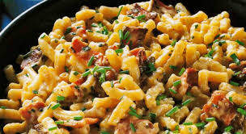

Macaroni

Ingredienten
- 150 gram gerookt spek
- 400 gram macaroni
- zout, zwarte peper
- 1 el. olijfolie
- 2 el. fijngesneden bieslook
- 250 gram mascarpone
- 3 el. geraspte Parmezaanse kaas
Bereiding
-
Kook de macaroni beetgaar volgens de aanwijzingen op de verpakking. Giet
af en laat goed uitlekken. Houd de macaroni goed warm.
-
Snijd het rookspek in kleine dobbelsteentjes. Verhit de olijfolie in een
anti-aanbakpan en bak daarin de dobbelsteentjes spek 3-4 min. tot ze
mooi knapperig zijn.
-
Voeg bieslook, mascarpone en Parmezaanse kaas toe. Verwarm op laag vuur
tot de mascarpone begint te smelten. Roer af en toe goed door. Voeg de
uitgelekte macaroni toe en schep er losjes doorheen. Verwarm de macaroni
kort mee.
-
Breng op smaak met zout en peper. Bestrooi de macaroni naar keuze nog
met vers kleingesneden bieslook en serveer zo heet mogelijk.